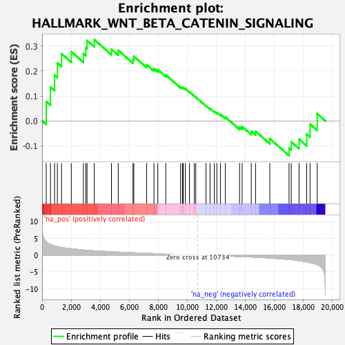
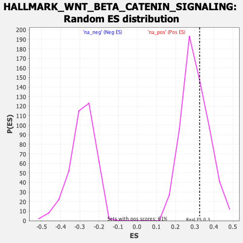

| | | Dataset | PFS |
| Phenotype | NoPhenotypeAvailable |
| Upregulated in class | na_pos |
| GeneSet | HALLMARK_WNT_BETA_CATENIN_SIGNALING |
| Enrichment Score (ES) | 0.3256371 |
| Normalized Enrichment Score (NES) | 1.0740328 |
| Nominal p-value | 0.3403909 |
| FDR q-value | 0.61200655 |
| FWER p-Value | 1.0 |
Table: GSEA Results Summary

Fig 1: Enrichment plot: HALLMARK_WNT_BETA_CATENIN_SIGNALING
Profile of the Running ES Score & Positions of GeneSet Members on the Rank Ordered List
| SYMBOL | RANK IN GENE LIST | RANK METRIC SCORE | RUNNING ES | CORE ENRICHMENT | | 1 | JAG2 | 285 | 4.003 | 0.0776 | Yes |
| 2 | WNT5B | 577 | 3.151 | 0.1353 | Yes |
| 3 | TP53 | 860 | 2.734 | 0.1838 | Yes |
| 4 | NOTCH4 | 1055 | 2.519 | 0.2319 | Yes |
| 5 | CCND2 | 1340 | 2.253 | 0.2692 | Yes |
| 6 | NCSTN | 2013 | 1.857 | 0.2775 | Yes |
| 7 | FZD1 | 2847 | 1.499 | 0.2693 | Yes |
| 8 | DKK4 | 3015 | 1.442 | 0.2939 | Yes |
| 9 | LEF1 | 3100 | 1.410 | 0.3221 | Yes |
| 10 | AXIN2 | 3598 | 1.261 | 0.3256 | Yes |
| 11 | NCOR2 | 4781 | 0.959 | 0.2871 | No |
| 12 | FRAT1 | 5247 | 0.866 | 0.2831 | No |
| 13 | WNT6 | 6267 | 0.674 | 0.2464 | No |
| 14 | HEY1 | 6324 | 0.663 | 0.2588 | No |
| 15 | HEY2 | 7209 | 0.515 | 0.2253 | No |
| 16 | MYC | 7711 | 0.434 | 0.2096 | No |
| 17 | NOTCH1 | 7977 | 0.395 | 0.2051 | No |
| 18 | AXIN1 | 8526 | 0.319 | 0.1843 | No |
| 19 | GNAI1 | 9546 | 0.169 | 0.1359 | No |
| 20 | DLL1 | 9676 | 0.151 | 0.1327 | No |
| 21 | CUL1 | 9729 | 0.143 | 0.1334 | No |
| 22 | DVL2 | 9876 | 0.119 | 0.1286 | No |
| 23 | PSEN2 | 10160 | 0.082 | 0.1160 | No |
| 24 | NUMB | 10493 | 0.035 | 0.0998 | No |
| 25 | DKK1 | 10593 | 0.020 | 0.0952 | No |
| 26 | HDAC2 | 11303 | -0.078 | 0.0606 | No |
| 27 | MAML1 | 11579 | -0.118 | 0.0492 | No |
| 28 | KAT2A | 11872 | -0.160 | 0.0379 | No |
| 29 | TCF7 | 12047 | -0.191 | 0.0333 | No |
| 30 | RBPJ | 12299 | -0.227 | 0.0257 | No |
| 31 | ADAM17 | 12633 | -0.286 | 0.0152 | No |
| 32 | SKP2 | 13614 | -0.444 | -0.0249 | No |
| 33 | HDAC11 | 13791 | -0.478 | -0.0229 | No |
| 34 | PTCH1 | 14418 | -0.592 | -0.0414 | No |
| 35 | JAG1 | 14714 | -0.657 | -0.0414 | No |
| 36 | HDAC5 | 15698 | -0.890 | -0.0713 | No |
| 37 | PPARD | 17024 | -1.336 | -0.1086 | No |
| 38 | WNT1 | 17176 | -1.398 | -0.0841 | No |
| 39 | CTNNB1 | 17713 | -1.680 | -0.0729 | No |
| 40 | FZD8 | 18239 | -2.035 | -0.0530 | No |
| 41 | CSNK1E | 18470 | -2.261 | -0.0127 | No |
| 42 | NKD1 | 18968 | -2.896 | 0.0285 | No |
Table: GSEA details [plain text format]

Fig 2: HALLMARK_WNT_BETA_CATENIN_SIGNALING: Random ES distribution
Gene set null distribution of ES for HALLMARK_WNT_BETA_CATENIN_SIGNALING